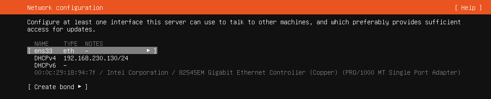
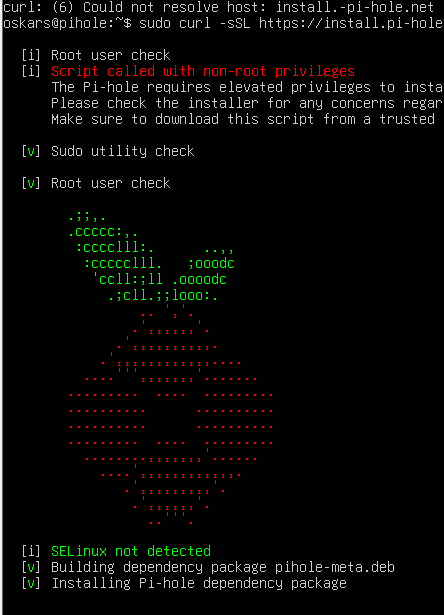
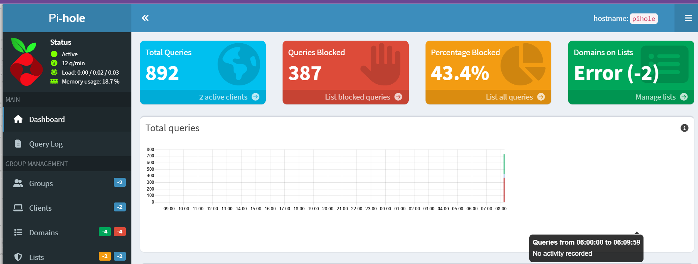
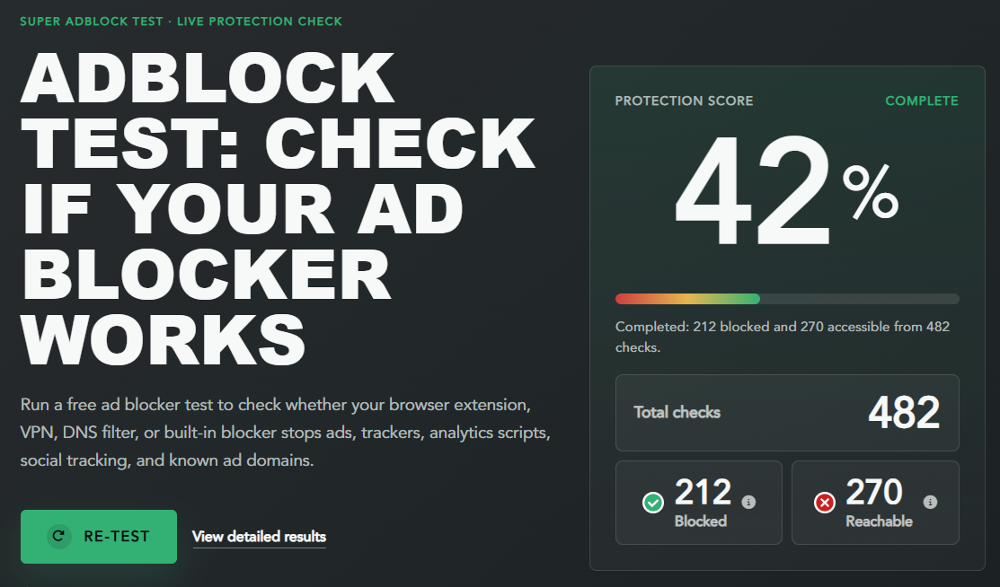
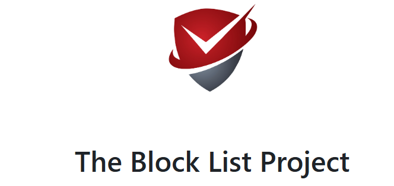

Pi-hole is a free program that blocks ads and trackers for your whole home internet network. It works as a DNS sinkhole, meaning it stops ads before they even load on your phones, computers, or smart TVs.

First I set up a VM with a ubuntu server in order to after install the pi-hole service on it.Pi-hole needs a server to have a static IP adress as otherwise it will keep changing its IPv4 adress that needs to be registered on other devices as DNS in order for it to be able to filter traffic.So i set up the static dns during the instolation as otherwise i would have had to do it later via changing the YAML config file

After i ran “sudo curl -sSL https://pi-hole.install.net | sudo bash” as thats what the official documentation said to do but it didnt work and insted just got stuck on the process shown in the image for more that 30 min , I had to restart the vm and perform some troublshooting to unfortunatly not find whats causing the issue so i decided to insted just change my aprosach and find a diffrent way to install it , fortunatley Pi-hole offical documentation has alternative instrusctions for people like me.

Afetr the alternative instolation I managed to get it running.Then I logged into the admin page in order to to be able to monitor its performance and later on install additional block lists.Then I registered the PI-hole server as my main DNS and tested its performance.
I tested the addblocking abilities of the pihile with an array of websites and the results were mixed, some said that it worked perfectly and some results suggested the comlete opposite like the “can you block it” webtool showed no adds and overall returned exelent results but “super addblock tester” returned a diffrent result every time testing ranging from 9% to 40% in completly random order

I also experemented with a large array of diffrent open source blocklists that are very simple to implement yet many seemed to be ineffective according to some web testing tools i used .

I also compared it to the adblocker that i use on dayly bases calaled “ublock origin” its a free chrome exension that blocks adds via intercepting network requests and matching them against massive, crowd-sourced blacklists ,and it showed better performance overall but if overall i would recomend Pi-hole as it can be connected straight to the whole network through changing the DNS setting on the router within the network and it works fine and in my experience showed no issues.